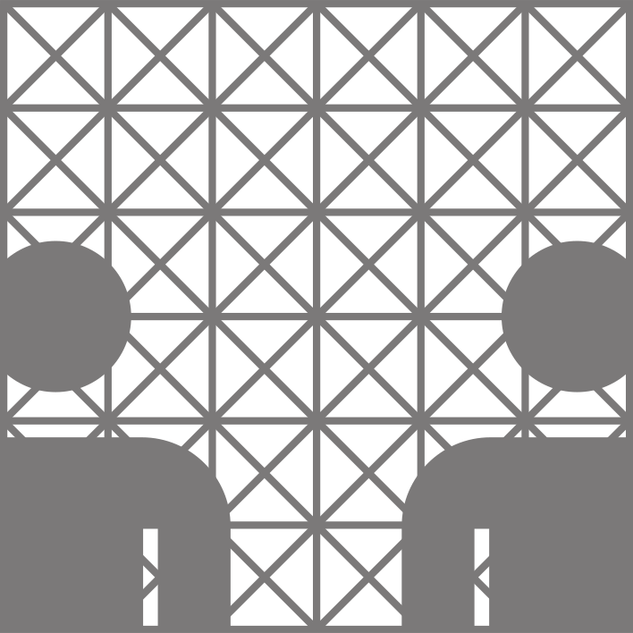

Modelling and Conception for Security in Software
Shahin Imanverdiyev & Senad Ličina
25.11.2013
Seminar: Software Architecture
Fachbereich Informatik
Universität Hamburg


Problem Description
enter problem description here.

Source: google.com
Roadmap
- section one
- subsection one one
- subsection one two
- section two
- subsection two one
- subsection two two
- subsection two three
Section one (Subsection one)
Put interesting text here.

References
-
Bellocchio et al.: 3D Surface Reconstruction: Multi-Scale Hierarchical Approaches.
Springer, New York (US-NY) 2013.